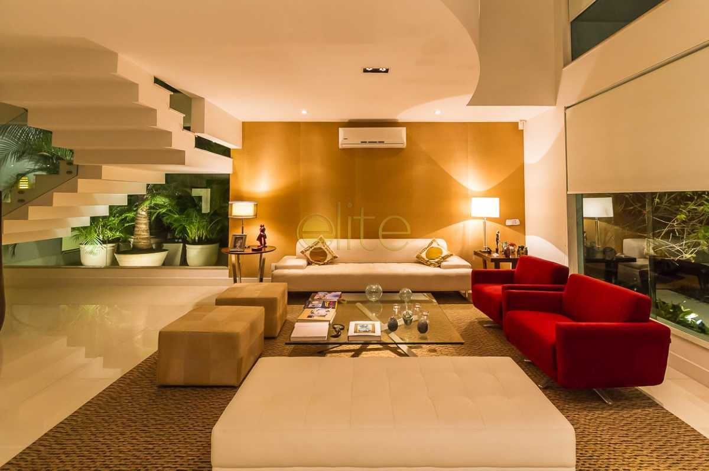

condomínio tropical
O local ideal para viver

condomínio tropical
O local ideal para viver
O nosso condomínio tem como intuíto de proporcionar ao caro cliente um bom atendimento e uma boa prestação dos nossos serviços e com isso ajudar no desenvolvimento do nosso país e portanto queremos que se sinta cómodo e feliz no nosso local de vivència .
O condomínio tropical oferce apartamentos e vivendas com mabílias da casa incluídas para facilitar a gestão da sua casa e garantir o seu conforto. No processo de expansão de operação, na grande parte dos casos as empresas precisam não apenas de novos espaços, mas principalmente de espaços que ofereçam serviços de qualidade para armazenar mercadoria. Os condomínios logísticos são pensados para suprir essa necessidade, oferecendo estruturas modernas, com características multiuso ou de divisão modular.
Localização estratégica Os condomínios logísticos ocupam sempre espaços localizados em áreas estratégicas, perto de rodovias, ferrovias, portos, aeroportos, terminais intermodais e dos centros de produção, escoamento e consumo. Com isso é possível otimizar o tempo na entrega das mercadorias e reduzindo os custos de transporte.